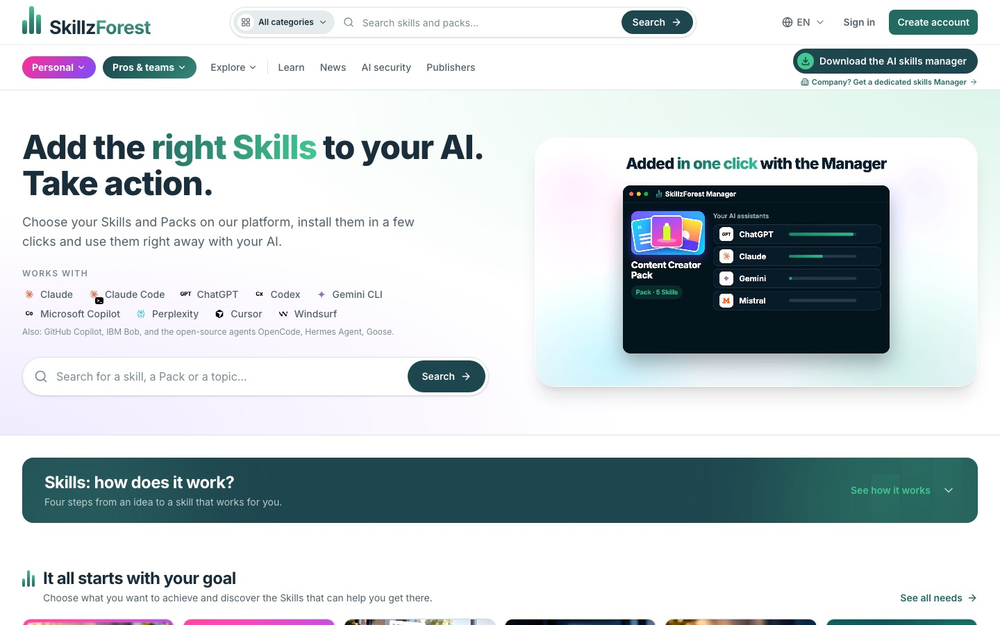
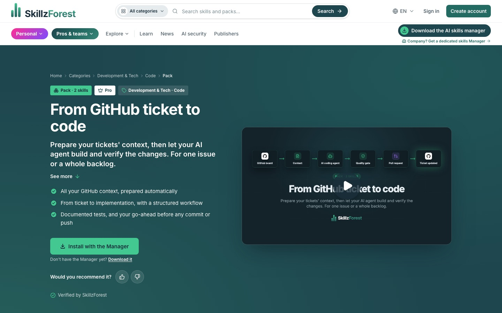
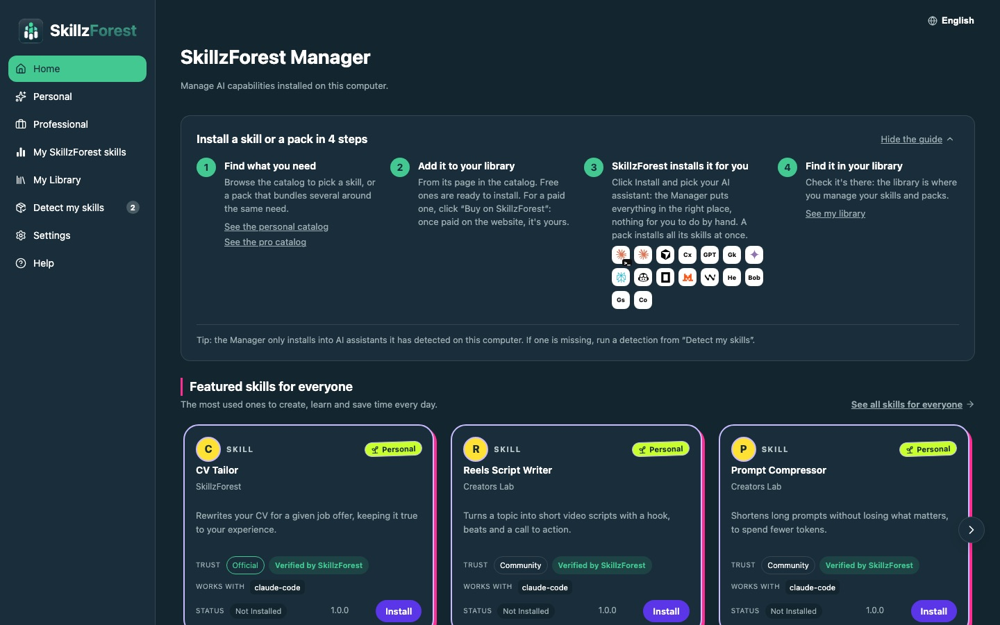

SKILLZFOREST // BUSINESS VALUE
Find trusted AI skills, install them in one click in the AI tools you already use,
and keep them up to date — without ever touching a file path or a SKILL.md.
The Problem
Agent Skills (Claude Code, Codex, Cursor, Gemini CLI, Copilot…) turn a general assistant into a specialist. But today they are shared as zip files and GitHub folders: nobody knows if a skill is safe, whether it works on their tool, or where to copy it. A skill is code and instructions that an agent runs with access to your files, your terminal and your keys — installing an unchecked one is a real security risk.
The Solution
- A marketplace with a trust layer — skills, packs, rules, workflows and MCP servers, from SkillzForest, publishers or the community. Each one shows who made it, how it was checked and which tools it works with.
- Every skill reviewed, whoever wrote it — security scanners, five specialised AI auditors, a real run in a sandbox with no Internet, then a human decision. A live skill is re-reviewed as soon as the rules change.
- One skill, every tool — a reviewed skill is converted automatically for 13 targets: folders for Claude Code, Cursor, Codex, Gemini CLI, Copilot, OpenCode, Mistral Vibe; upload packages for Copilot Studio, Gemini Enterprise, Perplexity, AWS AgentCore…
- A desktop Manager — detects the AI tools on the computer, installs a skill or a whole pack in the right place, finds skills already installed by hand, and keeps everything updated.
- Teams & enterprises — organizations, enterprise sign-in (Keycloak, SSO), a dedicated Manager per company.
What It Looks Like




Where AI Does the Work
The product is built around agents — on the user's side and behind the scenes:
| Job | Before | With SkillzForest |
|---|---|---|
| Checking a skill is safe | Read every file by hand | Scanners + 5 LLM auditors + sandboxed run + judge, then one human decision |
| Making it work on another tool | Rewrite it per tool | Automatic conversion for 13 targets from the reviewed bytes |
| Product page video | Hours of editing | One click: Claude Code writes it, Remotion renders it in FR and EN |
| SEO & blog | Manual audits and writing | SkillzForest's own SEO skills audit the site and draft its articles; a dedicated agent token can write drafts, never publish |
Who It's For
Individuals who want their AI to do more (social media, CV, writing, gaming…), professionals and teams (development, SEO, presales, design) who want vetted, maintained skills, publishers who want to distribute and sell theirs, and companies that need to control which AI capabilities their people install.